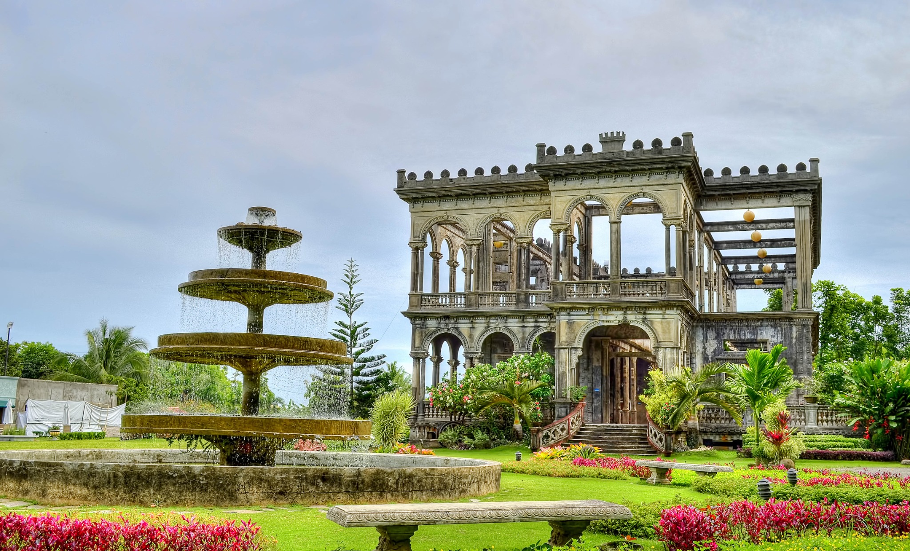
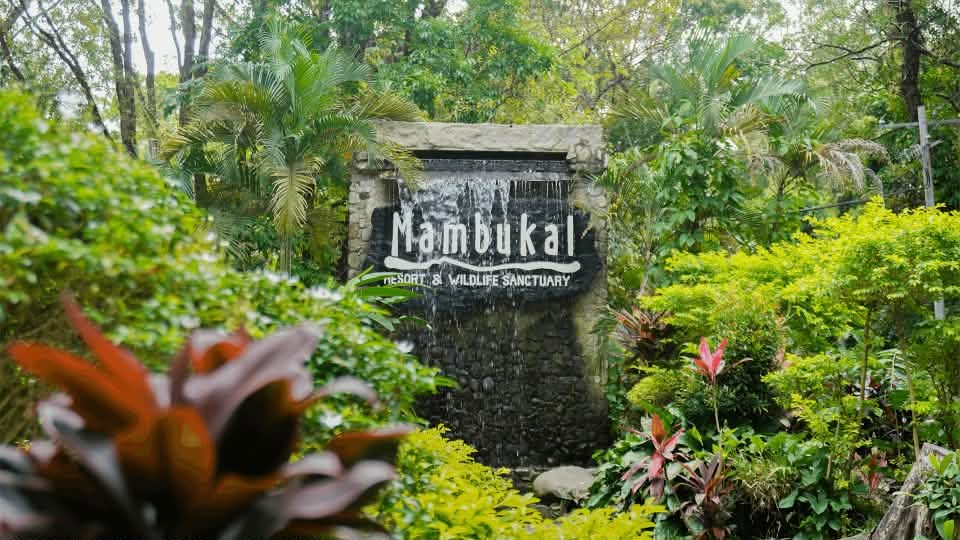
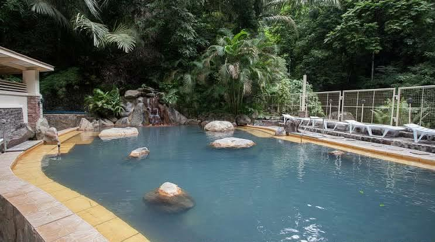
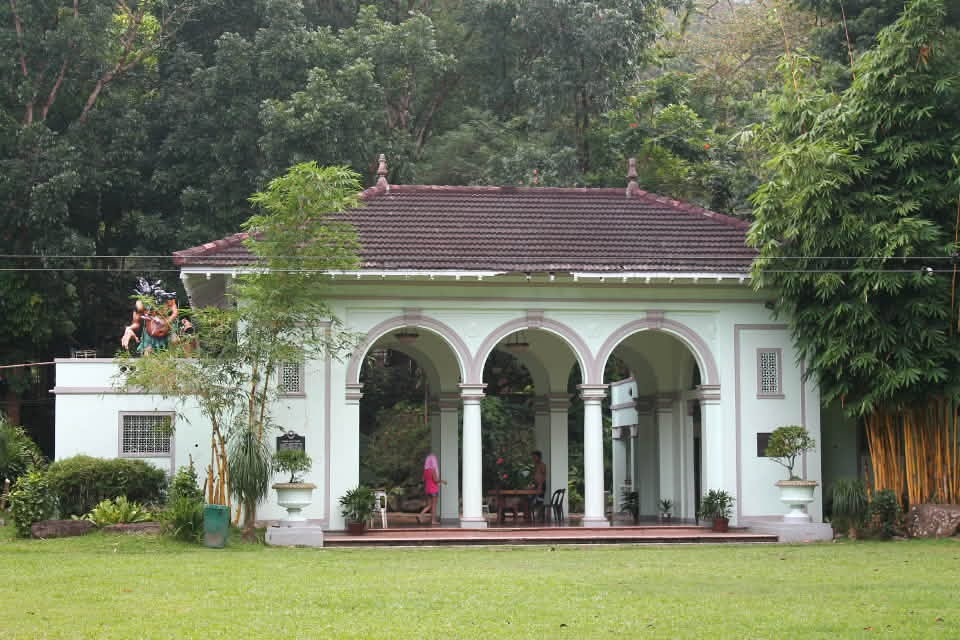
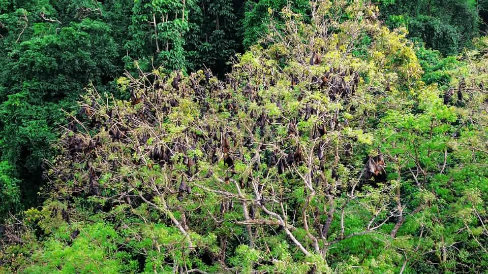

BY DAY
Details in the sunlight
Visit in the morning or afternoon to appreciate the mansion’s stonework, arches and gardens.
DISCOVER NEGROS OCCIDENTAL
From a mansion shaped by a story of love to forest trails, waterfalls and warm springs—discover two remarkable destinations close to Bacolod.
TALISAY CITY • MURCIA • PHILIPPINES
TWO DESTINATIONS, ONE PROVINCE
Negros Occidental brings together heritage and the outdoors. Explore the iconic stone mansion of The Ruins in Talisay, then head inland to Mambukal Mountain Resort in Murcia for cool mountain air, hot springs and forest scenery.
01 — TALISAY CITY, NEGROS OCCIDENTAL
A love story set in stone.
THE TAJ MAHAL OF NEGROS
The Ruins is the skeletal remains of a grand early-20th-century mansion in Talisay City. Its Italianate-inspired arches, columns and garden setting have made it one of Negros Occidental’s best-known heritage attractions.
The mansion was built by sugar baron Don Mariano Ledesma Lacson in memory of his Portuguese wife, Maria Braga. During World War II, in 1942, Filipino guerrillas burned the house to prevent Japanese forces from using it. The fire left the concrete structure standing, creating the landmark visitors see today.
Look closely at the columns and walls: the fire-darkened surface and surviving architectural details are part of the site’s story.
THE GARDENS & MANSION
The landscaped grounds frame the mansion and offer different perspectives of its arches, balconies and central entrance. Visitors can stroll through the garden, appreciate the architecture, take photographs and enjoy refreshments where available. Please stay within visitor areas and follow staff instructions around the historic structure.

Visit in the morning or afternoon to appreciate the mansion’s stonework, arches and gardens.
Stay into dusk or evening for the illuminated mansion and a different atmosphere. Confirm the day’s closing time before travelling.
02 — BARANGAY MINOYAN, MURCIA
A forest retreat at the foot of Mount Kanlaon.

RESORT & WILDLIFE SANCTUARY
Mambukal is a 23.6-hectare mountain resort and wildlife sanctuary in Barangay Minoyan, Murcia, around 1,200 feet above sea level at the foot of Mount Kanlaon. Its forest setting, sulfur hot springs, swimming pools and waterfall trails make it a popular day trip from Bacolod.
The resort was developed by Japanese architect Kokichi Paul Ishiwata in 1927, beginning as a bathhouse and picnic garden. Republic Act No. 1964, approved on June 22, 1957, established the Mambukal town site for health-centre and recreation-resort purposes.
Newer amenities reported by the provincial government include a river-dipping area, Garden Café and an enhanced wildlife-and-waterfalls trekking amenity.
A forest trail leads to a series of waterfalls. Trail access and conditions can change; ask the resort which falls are open and whether a guide is required before setting out.

Enjoy the resort’s warm sulfur dipping pool and swimming pools. The entrance ticket is reported to include pool use; confirm current inclusions at the gate.

See the historic Japanese-influenced bathhouse associated with the resort’s early development.

Explore the resort’s nature and wildlife features. Availability of the butterfly garden and guided activities should be checked with staff on arrival.
MORE TO EXPERIENCE
Picnic areas, cottages, river dipping, landscaped grounds and food outlets add to the experience. Bring suitable footwear for wet paths and trekking, and allow a full day if you plan to combine pools with the waterfall trail.
PLAN YOUR BUDGET
Amounts below are in Philippine pesos. Rates can change; use the verification notes and contact details before your trip.
TALISAY CITY
Published admission rates, checked November 2026.
| Visitor category | Admission |
|---|---|
| Adult | ₱150 |
| Student (valid ID) | ₱80 |
| Senior citizen / PWD (valid ID) | ₱100 |
| Child below 8 | Free* |
*Reported as free when accompanied by an adult. Confirm the age rule and ID requirements at the ticket counter. A separate photoshoot fee may apply; ask the venue for current terms. No separate child ticket price is listed in the current source checked.
MURCIA
Recent visitor-reported rates checked October 2026; confirm with the resort.
| Visitor category | Admission |
|---|---|
| Adult | ₱140 |
| Child | ₱80 |
| Student / senior / PWD | Not separately verified |
| Swimming & hot dipping pools | Reported included |
The latest rate information located reports ₱140 / ₱80 and says pool use is included. The official ticket site supports online entrance tickets but does not display a public itemized tariff in the information checked. Ask about applicable statutory discounts, age limits and the separate Japanese Ofuro charge.
Rates below are displayed by the resort’s online reservation site as of November 2026. Per night; room availability and inclusions vary.
| Accommodation | Capacity | Published rate |
|---|---|---|
| LGU Cottage – Matrimonial / Single | 2 guests | ₱1,500 |
| LGU Cottage – 4 pax | 4 guests | ₱2,000 |
| LGU Cottage – 6 pax | 6 guests | ₱2,500 |
| Mambukal Villa – Matrimonial | 2 guests | ₱2,000 |
| Mambukal Villa – Triple sharing | 3 guests | ₱2,400 |
| Mambukal Villa – Quadruple sharing | 4 guests | ₱3,000 |
| Convention Hotel | 2 guests | ₱2,240 |
| Tourist Lodge | 4–6 guests | ₱2,000–₱2,500 |
Other fees: Current standalone prices for Japanese Ofuro, cottages/picnic huts, butterfly garden, guides, parking and waterfall access could not be reliably verified from a current public tariff. Do not assume these are free or included—ask the ticket office.
Older project figures: Your original HTML listed light-vehicle ₱15, truck/bus ₱30 and picnic hut/table/pedal-boat prices. Those were not confirmed as current in the latest official information found, so they have not been labelled current here.
YOUR JOURNEY STARTS IN BACOLOD
Travel times and fares are planning estimates, not fixed quotations. Confirm routes and return trips with the driver or terminal staff.
BACOLOD → TALISAY CITY
ESTIMATED ROAD TIME 15–25 MINUTES
Open directions ↗BACOLOD → MURCIA
ESTIMATED ROAD TIME 45–60 MINUTES BY CAR
Open directions ↗MEMORIES OF NEGROS
A closer look at the heritage, gardens and mountain scenery of the two destinations.
TRAVEL WELL
A little preparation makes the trip smoother and helps protect these places.
Reconfirm entrance prices, opening times, private-event closures and facility availability. Bring cash and valid student, senior or PWD identification if claiming a discount.
For The Ruins: sun protection, water and a camera. For Mambukal: swimwear, towel, change of clothes, drinking water, insect repellent and shoes with good grip.
Do not litter, damage plants or disturb wildlife. Follow marked trails and staff instructions. For waterfalls, check trail status and use an accredited/authorized guide where required.
Wet rocks and forest paths can be slippery. Avoid restricted areas and do not enter closed pools or trails. Check weather and local advisories, especially around Mount Kanlaon.
THE RUINS
Hacienda Sta. Maria, Talisay City, Negros Occidental.
Published visitor information: theruins.com.ph. Phone numbers and event-specific opening arrangements should be confirmed through the venue’s current official channels.
MAMBUKAL RESORT
Barangay Minoyan, Murcia, Negros Occidental.
Phone: 0962 573 7726
Email: mambukalsanctuaryreservation@gmail.com
Reservation office: Negros Residences Lobby, Bacolod City; weekdays 8:00 AM–5:00 PM (office hours, not necessarily resort gate hours).
STUDENT PROJECT
This Tourist Local Destination Website was prepared by: